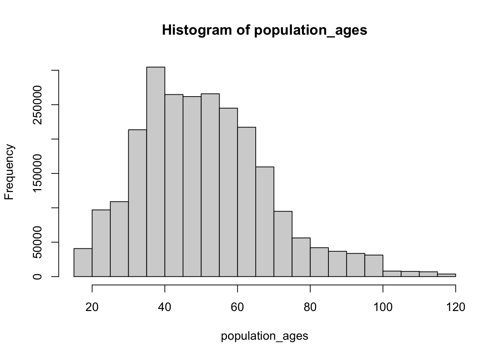
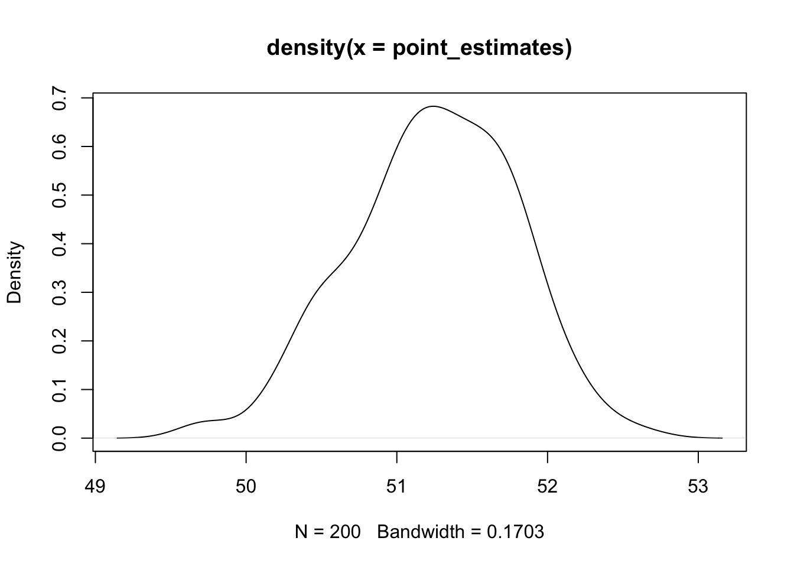
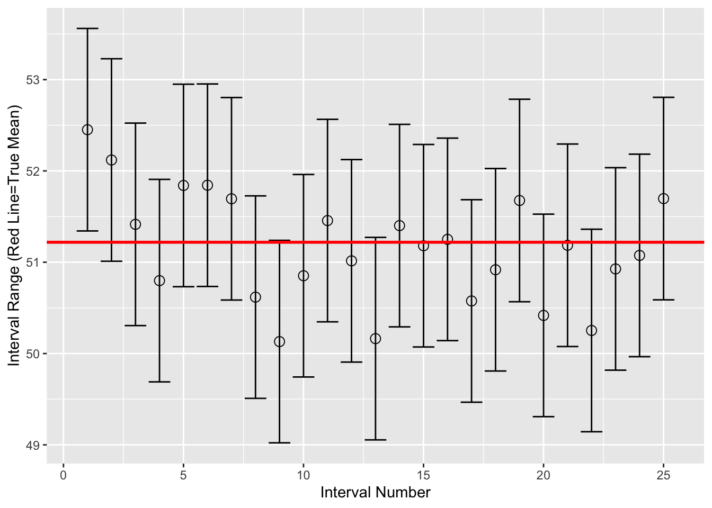

- Full credit goes to: https://www.kaggle.com/code/hamelg/intro-to-r-part-23-confidence-intervals/notebook
- My contribution is only adding comments to learn from this code as much as possible
- More on confidence intervals can be found here Hoekstra et al. (2014)
Generating data
The following example simulates the process of finding the mean age value of a population of voters.
- First we generate a population with their age values
- 1 Million values a generated from an exponential distribution and 1.5 Million values from a poisson distribution
- 18 is added to make sure that no age value is below 18 years old.
- For numbers higher than 100 the modulo (%%) is taken and 18 is added to make sure we don’t end up with too large numbers.

Code
true_mean <- mean(population_ages) # Check the population mean
true_meanDrawing different sample from the population and calculating the mean
- The central limit theorem states that the distribution of the mean values are normally distributed no matter what the distribution is of the population.
Let’s visualize the distribution of mean values. A skewness of 0 would be a normal distribution.

[1] -0.2609927Confidence Intervals for the mean values
- First the sample size is determined then an empty vector is created that will store the boundaries of all confidence intervals
- The for loop is set to 25, meaning we draw a sample of size 1000 25 times.
- With qnorm we can get the z value that is used to calculate the boundaries of the confidence intervals
Code
set.seed(12)
sample_size <- 1000
intervals <- c() # Create and store 25 intervals
for (sample in 1:25){
sample_ages <- sample(population_ages, size=sample_size) # Take a sample of 1000 ages
sample_mean <- mean(sample_ages) # Get the sample mean
z_critical <- qnorm(0.975) # Get the z-critical value*
pop_stdev <- sd(population_ages) # Get the population standard deviation
margin_of_error <- z_critical * (pop_stdev / sqrt(sample_size)) # Calculate margin of error
confidence_interval <- c(sample_mean - margin_of_error, # Calculate the the interval
sample_mean + margin_of_error)
intervals <- c(intervals, confidence_interval)
}
interval_df <- data.frame(t(matrix(intervals,2,25))) # Store intervals as data framePlotting the 25 confidence intervals
The red line shows the true mean. We see the first confidence interval not including the true mean. (1/25 = 0.04)

Summary
- Simulating confidence interval shows that some will not include the true value.
References
Hoekstra, Rink, Richard D. Morey, Jeffrey N. Rouder, and Eric-Jan Wagenmakers. 2014. “Robust Misinterpretation of Confidence Intervals.” Psychonomic Bulletin & Review 21 (5): 1157–64. https://doi.org/10.3758/s13423-013-0572-3.